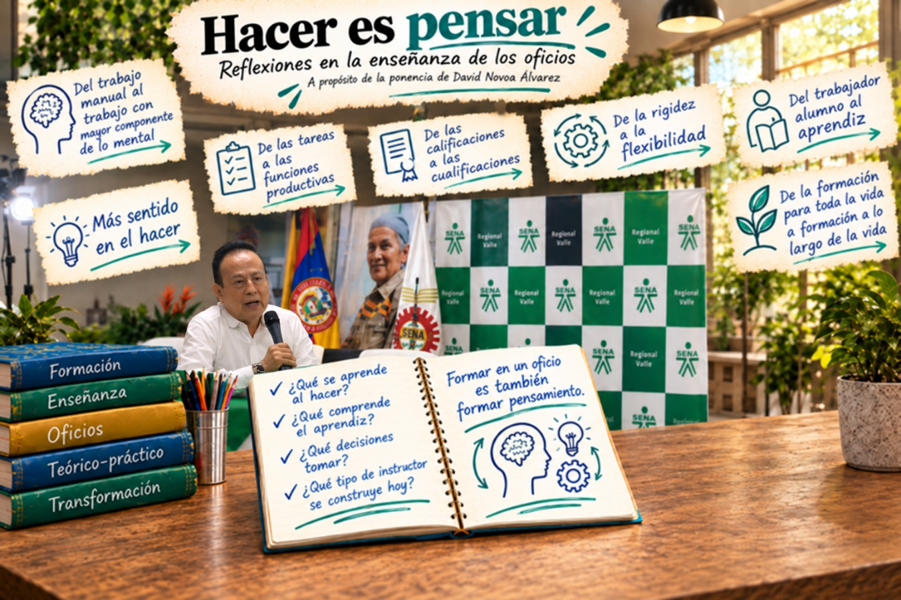
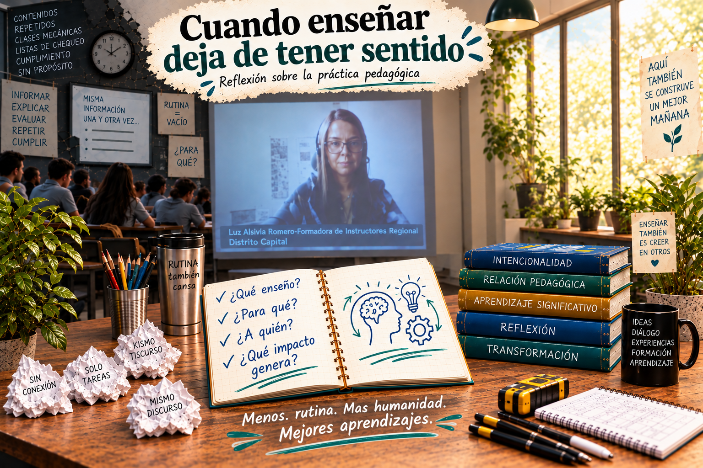

Eje Enseñanza
3. Eje enseñanza: volver a preguntarse qué significa enseñar
Las reflexiones sobre la enseñanza de oficios y ocupaciones, el sentido de la práctica pedagógica y las voces que ampliaron la conversación.
3. Eje enseñanza: volver a preguntarse qué significa enseñar
A continuación, abordamos las líneas propuestas del primer eje (enseñanza).
3.1. “Hacer es pensar”: enseñar los oficios y las ocupaciones
En la ponencia “Hacer es pensar: Reflexiones en la enseñanza de los oficios y las ocupaciones”, el ponente David Novoa Álvarez propuso mirar la enseñanza en el SENA más allá de la transmisión de procedimientos técnicos. Su intervención situó el oficio de enseñar dentro de una historia de transformaciones de la formación para el trabajo y permitió reconocer varios argumentos para explicar la práctica pedagógica del instructor:
- Hacer también es una forma de pensar: La enseñanza de un oficio no puede reducirse a aprender a ejecutar correctamente una tarea. En el hacer intervienen conocimiento, experiencia, decisiones, comprensión y reflexión. Esta perspectiva cuestiona la separación entre trabajo manual y trabajo intelectual y devuelve valor pedagógico al conocimiento que se construye en la práctica.
- La enseñanza de los oficios se transforma con las maneras de comprender el trabajo: Novoa mostró que las prácticas formativas del SENA no han permanecido iguales: se han configurado en relación con cambios productivos, tecnológicos, sociales e institucionales. En ese recorrido aparecen desplazamientos como el paso del trabajo manual al trabajo con mayor componente mental, de las tareas a las funciones productivas, de las calificaciones a las cualificaciones y de la rigidez hacia formas más flexibles de organización del trabajo.
- También han cambiado las maneras de comprender a quien enseña y a quien aprende: Entre las transformaciones señaladas aparecen el tránsito del instructor entendido principalmente como experto técnico al instructor profesional, y del trabajador-alumno a la figura del aprendiz. Estos desplazamientos muestran que enseñar un oficio demanda algo más que dominar técnicamente una ocupación: implica asumir una responsabilidad propiamente formativa y pedagógica.
- De lo procedimental a lo formativo: Uno de los retos centrales de la ponencia está en superar una enseñanza concentrada exclusivamente en la ejecución de procesos técnicos para reconocer que la formación para el trabajo también configura sujetos, en el contexto misional de formar para la vida y para el trabajo. Importan los procedimientos, pero también aquello que el aprendiz comprende y sitúa en su contexto ocupacional y social, las decisiones que puede tomar y la manera como se relaciona con el saber y con su oficio.
- Las formas de enseñar son históricas, no naturales ni inmutables: Al preguntarse por las condiciones de posibilidad de la enseñanza de los oficios y las ocupaciones en el SENA, el ponente David Novoa invitó a observar los saberes y las prácticas que han configurado la formación para el trabajo, las nociones de trabajo que han circulado y las formas de concebir al instructor y al aprendiz. Desde esta perspectiva, la enseñanza actual es resultado de tensiones, desplazamientos y transformaciones acumuladas en el tiempo.
- Pensar el presente del instructor exige reconocer cambios sucedidos: El paso de la enseñanza al aprendizaje, de la presencialidad a la virtualidad (en algunos casos) y de una formación centrada predominantemente en procedimientos hacia una perspectiva más formativa plantea nuevas exigencias para la enseñanza de las ocupaciones y oficios. La cuestión de fondo no es solamente qué debe hacer hoy un instructor, sino qué tipo de instructor se está configurando frente a las nuevas condiciones de la formación para el trabajo.

La intervención de Novoa instaló una pregunta significativa para el resto del Encuentro: ¿qué significa enseñar un oficio cuando el trabajo, la tecnología, los aprendices y el propio papel del instructor están cambiando?
3.2. “Cuando enseñar deja de tener sentido”
La Mg. Luz Alsivia Romero orienta su ponencia “Cuando enseñar deja de tener sentido”, desde una “reflexión sobre la práctica pedagógica”, poniendo su mirada no solamente en las metodologías o en los recursos, sino en el sentido que adquieren dentro de una experiencia real de formación. Se identifica el énfasis en los siguientes argumentos:
- La distancia que puede abrirse entre enseñar y lograr que alguien aprenda. Enseñar corre el riesgo de convertirse en una actividad que se cumple (explicar, presentar información, desarrollar contenidos, ejecutar una planeación) sin que necesariamente se interrogue lo que esas acciones están produciendo en el aprendiz. La pregunta por el sentido desplaza entonces la atención de aquello que hace el instructor hacia lo que ocurre con quien aprende. En el contexto del propio Encuentro, esta preocupación dialoga con la idea reiterada en la apertura de que el instructor no puede limitarse a transmitir conocimientos, sino que está llamado a construir experiencias de aprendizaje significativas.
- El sentido de enseñar no puede separarse de las personas concretas a quienes se enseña. Cuando la práctica se vuelve repetitiva, cuando se aplica de la misma manera independientemente del grupo o cuando el desarrollo del contenido termina ocupando el centro de la experiencia, existe el riesgo de perder de vista al aprendiz, sus preguntas y el modo particular en que se relaciona con aquello que está aprendiendo. La enseñanza recupera sentido cuando vuelve a establecer una relación entre lo que se propone aprender y aquello que el aprendiz puede comprender, hacer y reconocer como significativo en su proceso formativo.
- No basta con incorporar actividades, estrategias o recursos porque sean novedosos. Lo relevante es preguntarse para qué se utilizan y qué experiencia de aprendizaje permiten construir. En esta perspectiva, la práctica pedagógica requiere que el instructor pueda explicar no solamente qué está haciendo, sino por qué lo hace y qué espera provocar con ello. Esa interrogación convierte la enseñanza en una práctica que necesita ser revisada y reconstruida permanentemente, en lugar de asumirse como un procedimiento terminado.
- La reflexión del instructor sobre su propia práctica. La ponencia coloca al instructor dentro del problema: no se trata únicamente de preguntarse por las dificultades, motivaciones o comportamientos de los aprendices, sino también de revisar las decisiones pedagógicas desde las cuales se organiza la formación. Preguntarse cuándo enseñar deja de tener sentido implica, por tanto, preguntarse también cuándo una manera habitual de enseñar necesita cambiar.
Pueden resumirse los argumentos en cinco aspectos:
- Interrogar el sentido de lo que hacemos al enseñar.
- Distinguir enseñar de simplemente transmitir o cumplir una actividad.
- Volver la mirada hacia el aprendizaje y hacia el aprendiz concreto.
- Recuperar la intencionalidad que sostiene las decisiones pedagógicas;
- y hacer de la reflexión sobre la propia práctica una condición para renovar la enseñanza.

Vista dentro del eje Enseñanza del IV Encuentro Pedagógico, la intervención introduce así una pregunta relevante para la reflexión: ¿qué hace que una experiencia de enseñanza tenga sentido para quien enseña y, especialmente, para quien aprende?
3.3. Las voces que ampliaron la conversación sobre la enseñanza
Además de las ponencias; las intervenciones de las moderadoras, los vídeos proyectados y los espacios de conversación ampliaron la reflexión sobre qué está pasando con la enseñanza en el SENA y qué transformaciones exige hoy el oficio de ser instructor.
De manera global, de las intervenciones puede identificarse seis líneas claves:
- De transmitir contenidos a construir experiencias de aprendizaje. Se insistió en que el instructor no solo comunica conocimientos: acompaña, orienta, diseña y rediseña experiencias, plantea problemas y crea condiciones para que el aprendiz actúe, comprenda y tome decisiones.
- La enseñanza debe transformarse con el contexto. Los cambios tecnológicos, sociales, productivos y las nuevas realidades de los aprendices obligan a revisar las prácticas pedagógicas. En los vídeos aparecieron referencias a cocreación, formación por competencias, aprendizaje basado en problemas, gamificación e inteligencia artificial.
- La tecnología requiere intención pedagógica. La innovación no se plantea como un fin en sí mismo. Su valor depende de que fortalezca el aprendizaje, el pensamiento crítico y la capacidad de actuar, sin sustituir la reflexión pedagógica ni convertir la formación en una sucesión de herramientas.
- Innovación tecnológica y formación humana deben permanecer articuladas. Las intervenciones destacaron la necesidad de fortalecer, junto con las capacidades técnicas, la autonomía, el pensamiento crítico y el sentido ético de los aprendices. Esta preocupación anticipó el diálogo posterior entre los ejes Enseñanza, Tecnología y Humanidad.
- La formación debe dialogar con la realidad productiva sin reducirse a ella. Se reconoció la importancia de responder a las necesidades de los sectores productivos, la empleabilidad y el emprendimiento, pero también de formar personas capaces de resolver problemas, adaptarse a los cambios y actuar con criterio.
- El aprendiz y su contexto deben ocupar un lugar central. Las condiciones socioculturales, las particularidades de las personas y las nuevas formas de aprender cuestionan una enseñanza uniforme. Esto exige que el instructor conozca no solo su campo técnico, sino también a quienes acompaña y las realidades en las que ocurre la formación.
En conjunto, estos momentos dejaron planteada una pregunta transversal: si cambian el trabajo, la tecnología, los aprendices y sus contextos, ¿cómo debe cambiar también la enseñanza?
3.4. Preguntas, tensiones y desplazamientos del eje Enseñanza
Vistas en conjunto ponencias de David Novoa y Luz Alsivia Romero con las intervenciones de las moderadoras, los videos y el conversatorio, el eje Enseñanza deja abiertas, entre otras, las siguientes cuestiones:
- ¿Qué significa hoy enseñar un oficio o una ocupación cuando están cambiando el trabajo, la tecnología, los aprendices y el propio papel del instructor?
- ¿Cómo reconocer que hacer también es pensar, y que en la práctica intervienen conocimiento, experiencia, comprensión, decisiones y reflexión?
- ¿Cómo superar una enseñanza centrada únicamente en procedimientos, tareas y resultados, para avanzar hacia una formación que también contribuya a configurar sujetos autónomos, críticos y capaces de tomar decisiones?
- ¿Cuándo enseñar deja de tener sentido?
- ¿Qué ocurre cuando la enseñanza se convierte en repetición, cumplimiento de actividades o transmisión de información desconectada del aprendizaje?
- ¿Cómo recuperar el sentido y la intencionalidad pedagógica de lo que hacemos? ¿Para qué enseñamos, a quién enseñamos y qué buscamos producir con nuestras decisiones pedagógicas?
- ¿Cómo pasar de transmitir contenidos a proponer experiencias de aprendizaje en las que el aprendiz pueda preguntar, actuar, comprender, resolver problemas y construir conocimiento?
- ¿Qué tipo de instructor requieren las condiciones actuales de la formación?
- ¿Cómo se transforma el papel del experto técnico cuando se reconoce al instructor como profesional de la formación y de la enseñanza?
- ¿Qué lugar ocupa el aprendiz y su contexto en las decisiones de enseñanza? ¿Cómo evitar una práctica uniforme frente a realidades, trayectorias y formas de aprender diversas?
- ¿Cómo responder a las transformaciones del mundo productivo sin reducir la formación a las exigencias inmediatas del trabajo?
- ¿Cómo articular cualificación, empleabilidad y productividad con autonomía, pensamiento crítico y formación humana?
- ¿Cómo incorporar las tecnologías, incluida la inteligencia artificial, con intención pedagógica, evitando que la novedad tecnológica sustituya la reflexión sobre la enseñanza y el aprendizaje?
- ¿Cómo equilibrar innovación tecnológica y formación humana, de manera que la tecnología contribuya al aprendizaje, la autonomía, el criterio y la dimensión ética?
- ¿Cómo revisar prácticas de enseñanza que históricamente se han dado por naturales?
- ¿Cómo convertir la propia práctica del instructor en objeto permanente de reflexión?
De manera más suscita, podeos concluir que la gran inquietud que nos deja el Eje Enseñanza es: ¿cómo construir una enseñanza que conserve sentido en medio de las transformaciones del trabajo, la tecnología y la sociedad, sin perder de vista que formar para un oficio es también formar personas capaces de pensar, comprender, decidir y transformar?